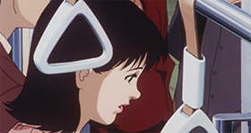
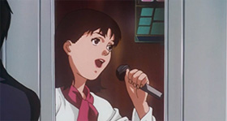
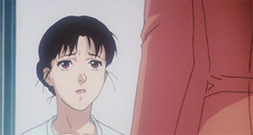
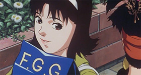
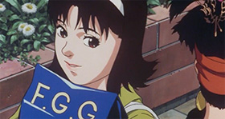

もお サイアク! 振りは違う、歌詞は忘れる、 みんなに申し訳ないよォ. 今朝の電車で、左足から下りたのがケチのつき始め よ! 愛車とおつ口は右足からってきめてんのにィ!
芸能人やっててヨカッタ・PARTIZ! 今日耀 影所で、名奉行の人とすれ違ってしまった♪ 超力 ンゲキ! おはあちゃんに言ったらヌかすかもし んないよ! だっておはあちゃんて、昔っから名奉行様の大つ ァンなんだよ.
今日は未麻の21歳の誕生日で、生徒さんたち、シャオリ、そして事務所の皆さんがお祝いのパーティーを開いてくれました. 本当に素敵な時間でした！
今日、帰る前にいつものスーパーに行って、いくつか買いました。ペットボトルの水と牛乳です。牛銀のブランドは間違いなく最高です。たまには自分にご褒美も必要ですよね。それから、愛用のネオンテトラの餌も買いました！

ドラマ「ダブルバインド」での落合恵理さんの演技が印象に残っています。撮影が始まると、まるで別人のようでした.
もう二度とあの映画には出演したくない。あのプロデューサーは本当に変人で、私の役をめちゃくちゃにしてしまった！ファンのために歌うことが、私にとって一番の喜びなんだ！
今日も少し落ち込んでいましたが... あなたのメールを受け取って気分がずいぶん良くなりました.
今日は原宿に買い物に行きました。私は買い物に全く抵抗がありません.
 

助けてください！全部他人に強制されたんです！脚本家のせいなんです！
助けて！助けて！助けて！助けて！助けて！助けて！助けて！助けて！助けて！助けて！助けて！助けて！助けて！助けて！助けて！助けて！助けて！助けて！助けて！助けて！助けて！助けて！助けて！助けて！助けて！助けて！助けて！助けて！助けて！助けて！助けて！助けて！助けて！助けて！助けて！助けて！助けて！助けて！助けて！助けて！助けて！助けて！助けて！助けて！助けて！助けて！助けて！助けて！助けて！助けて！助けて！助けて！助けて！助けて！助けて！助けて！助けて！助けて！助けて！助けて！助けて！助けて！助けて！助けて！助けて！助けて！助けて！助けて！助けて！助けて！助けて！助けて！助けて！助けて！助けて！助けて！助けて！助けて！助けて！助けて！助けて！助けて！助けて！助けて！助けて！助けて！助けて！助けて！助けて！助けて！助けて！助けて！助けて！助けて！助けて！助けて！助けて！助けて！助けて！助けて！助けて！助けて！助けて！助けて！助けて！助けて！助けて！助けて！助けて！助けて！助けて！助けて！助けて！助けて！助けて！助けて！助けて！助けて！助けて！助けて！助けて！助けて！助けて！助けて！助けて！助けて！助けて！助けて！助けて！助けて！助けて！助けて！助けて！助けて！助けて！助けて！助けて！助けて！助けて！助けて！助けて！助けて！助けて！助けて！助けて！助けて！助けて！助けて！助けて！助けて！助けて！助けて！助けて！助けて！助けて！助けて！助けて！助けて！助けて！助けて！助けて！助けて！助けて！助けて！助けて！助けて！助けて！助けて！助けて！助けて！助けて！助けて！助けて！助けて！助けて！助けて！助けて！助けて！助けて！助けて！助けて！助けて！助けて！助けて！助けて！助けて！助けて！助けて！助けて！助けて！助けて！助けて！助けて！助けて！助けて！助けて！助けて！助けて！助けて！助けて！助けて！助けて！助けて！助けて！助けて！助けて！助けて！助けて！助けて！助けて！助けて！助けて！助けて！助けて！助けて！助けて！助けて！助けて！助けて！助けて！助けて！助けて！助けて！助けて！助けて！助けて！助けて！助けて！助けて！助けて！助けて！助けて！助けて！助けて！助けて！助けて！助けて！助けて！助けて！助けて！助けて！助けて！助けて！助けて！助けて！助けて！助けて！助けて！助けて！助けて！助けて！助けて！助けて！助けて！助けて！助けて！助けて！助けて！助けて！助けて！助けて！助けて！助けて！助けて！助けて！助けて！助けて！助けて！助けて！助けて！助けて！助けて！助けて！助けて！助けて！助けて！助けて！助けて！助けて！助けて！助けて！助けて！助けて！助けて！助けて！助けて！助けて！助けて！助けて！助けて！助けて！助けて！助けて！助けて！助けて！助けて！助けて！助けて！助けて！助けて！助けて！助けて！助けて！助けて！助けて！助けて！助けて！助けて！助けて！助けて！助けて！助けて！助けて！助けて！助けて！助けて！助けて！助けて！助けて！助けて！助けて！助けて！助けて！助けて！助けて！助けて！助けて！助けて！助けて！助けて！助けて！助けて！助けて！助けて！助けて！助けて！助けて！助けて！助けて！助けて！助けて！助けて！助けて！助けて！助けて！助けて！助けて！助けて！助けて！助けて！助けて！助けて！助けて！助けて！助けて！助けて！助けて！助けて！助けて！助けて！助けて！助けて！助けて！助けて！助けて！助けて！助けて！助けて！助けて！助けて！助けて！助けて！助けて！助けて！助けて！助けて！助けて！助けて！助けて！助けて！助けて！助けて！助けて！助けて！助けて！助けて！助けて！助けて！助けて！助けて！助けて！助けて！助けて！助けて！助けて！助けて！助けて！助けて！助けて！助けて！助けて！助けて！助けて！助けて！助けて！助けて！助けて！助けて！助けて！助けて！助けて！助けて！助けて！助けて！助けて！助けて！助けて！助けて！助けて！助けて！助けて！助けて！助けて！助けて！助けて！助けて！助けて！助けて！助けて！助けて！助けて！助けて！助けて！助けて！助けて！助けて！助けて！助けて！助けて！助けて！助けて！助けて！助けて！助けて！助けて！助けて！助けて！助けて！助けて！助けて！助けて！助けて！助けて！助けて！助けて！助けて！助けて！助けて！助けて！助けて！助けて！助けて！助けて！助けて！助けて！助けて！助けて！助けて！助けて！助けて！助けて！助けて！助けて！助けて！助けて！助けて！助けて！助けて！助けて！助けて！助けて！助けて！助けて！助けて！助けて！助けて！助けて！助けて！助けて！助けて！助けて！助けて！助けて！助けて！助けて！助けて！助けて！助けて！助けて！助けて！助けて！助けて！助けて！助けて！助けて！助けて！助けて！助けて！助けて！助けて！助けて！助けて！助けて！助けて！助けて！助けて！助けて！助けて！助けて！助けて！助けて！助けて！助けて！助けて！助けて！助けて！助けて！助けて！助けて！助けて！助けて！助けて！助けて！助けて！助けて！助けて！助けて！助けて！助けて！助けて！助けて！助けて！助けて！助けて！助けて！助けて！助けて！助けて！助けて！助けて！助けて！助けて！助けて！助けて！助けて！助けて！助けて！助けて！助けて！助けて！助けて！助けて！助けて！助けて！助けて！助けて！助けて！助けて！助けて！助けて！助けて！助けて！助けて！助けて！助けて！助けて！助けて！助けて！助けて！助けて！助けて！助けて！助けて！助けて！助けて！助けて！助けて！助けて！助けて！助けて！助けて！助けて！助けて！助けて！助けて！助けて！助けて！助けて！助けて！助けて！助けて！助けて！助けて！助けて！助けて！助けて！助けて！助けて！助けて！助けて！助けて！助けて！助けて！助けて！助けて！助けて！助けて！助けて！助けて！助けて！助けて！助けて！助けて！助けて！助けて！助けて！助けて！助けて！助けて！助けて！助けて！助けて！助けて！助けて！助けて！助けて！助けて！助けて！助けて！助けて！助けて！助けて！助けて！助けて！助けて！助けて！助けて！助けて！助けて！助けて！助けて！助けて！助けて！助けて！助けて！助けて！助けて！助けて！助けて！助けて！助けて！助けて！助けて！助けて！助けて！助けて！助けて！助けて！助けて！助けて！助けて！助けて！助けて！助けて！助けて！助けて！助けて！助けて！助けて！助けて！助けて！助けて！助けて！助けて！助けて！助けて！助けて！助けて！助けて！助けて！助けて！助けて！助けて！助けて！助けて！助けて！助けて！助けて！助けて！助けて！助けて！助けて！助けて！助けて！助けて！助けて！助けて！助けて！助けて！助けて！助けて！助けて！助けて！助けて！助けて！助けて！助けて！助けて！助けて！助けて！助けて！助けて！助けて！助けて！助けて！助けて！助けて！助けて！助けて！助けて！助けて！助けて！助けて！助けて！助けて！助けて！助けて！助けて！助けて！助けて！助けて！助けて！助けて！助けて！助けて！助けて！助けて！助けて！助けて！助けて！助けて！助けて！助けて！助けて！助けて！助けて！助けて！助けて！助けて！助けて！助けて！助けて！助けて！助けて！助けて！助けて！助けて！助けて！助けて！助けて！助けて！助けて！助けて！助けて！助けて！助けて！助けて！助けて！助けて！助けて！助けて！助けて！助けて！助けて！助けて！助けて！助けて！助けて！助けて！助けて！助けて！助けて！助けて！助けて！助けて！助けて！助けて！助けて！助けて！助けて！助けて！助けて！助けて！助けて！助けて！助けて！助けて！助けて！助けて！助けて！助けて！助けて！助けて！助けて！助けて！助けて！助けて！助けて！助けて！助けて！助けて！助けて！助けて！助けて！助けて！助けて！助けて！助けて！助けて！助けて！助けて！助けて！助けて！助けて！助けて！助けて！
...
...
...
...
...
私は本物だよ.